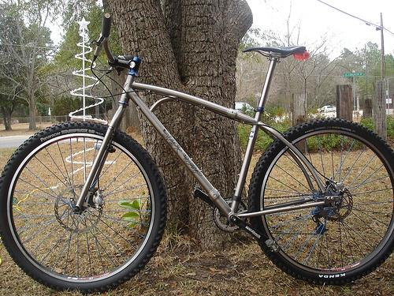
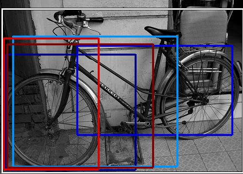
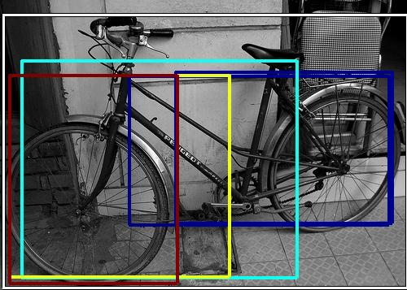
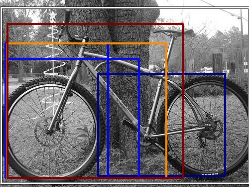
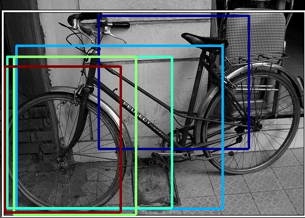
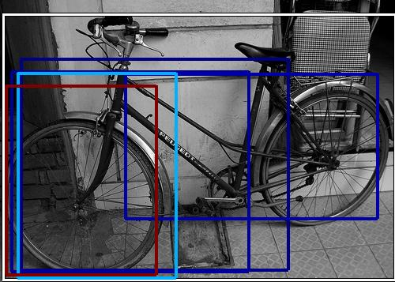

0.550986

0.552976

0.560692
0.565576

0.568715

0.601678

0.604807

0.611813

0.623341

0.632162
| Target image | 0.550986 | 0.552976 | 0.560692 |  0.565576 | 0.568715 | 0.601678 | 0.604807 | 0.611813 | 0.623341 | 0.632162 |
| Target image  |  15259.782227 |  11616.816406 |  11077.153320 |  10976.208008 |  9387.924805 |  7860.122070 |  7592.727051 |  7481.045410 |  7051.289062 |  6592.433594 |
| Target image  |  11837.623047 |  9124.874023 |  6329.420898 |  6249.990723 |  6085.625000 |  5149.090332 |  4805.194336 |  4241.455566 |  4195.243164 |  3906.362061 |
| Target image  |  12543.144531 |  6161.828125 |  4771.791992 |  4723.526367 |  4486.610840 |  4205.195801 |  3999.455811 |  3814.583984 |  3689.406982 |  3537.302734 |
| Target image  |  12244.375977 |  5937.038086 |  4766.495117 |  4225.463867 |  4184.690430 |  4115.972168 |  4040.185059 |  3998.294189 |  3943.472900 |  3739.984131 |